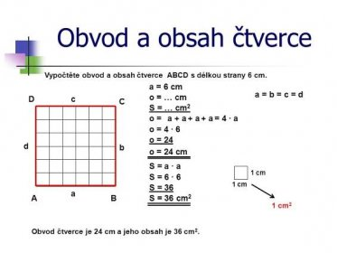
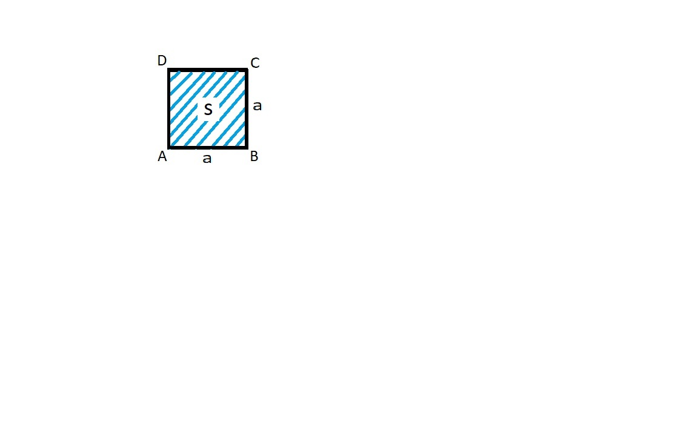

Pro výpočet obsahu čtverce je třeba znát délku strany. Délka strany musí být vyjádřena v metrech. Pokud máte délku strany v jiné jednotce, musíte ji převést na metry. Výpočet obsahu čtverce pak provedete následujícím způsobem:
strana = délka strany čtverce obsah = strana * strana
Výsledkem je hodnota obsahu čtverce v metrech čtverečních.
Pro více informací navštivte Wikipedia: Square (geometry).
 